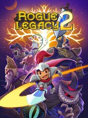

Rogue Legacy 2
Details
|  | |
| Playtime | Not Played |
| Last Activity | Never |
| Added | 8/19/2023 14:50:25 |
| Modified | 8/19/2023 15:04:21 |
| Completion Status | Not Played |
| Library | Steam |
| Source | Steam |
| Platform | PC (Windows) |
| Release Date | 4/18/2020 |
| Community Score | 79 |
| Critic Score | 90 |
| User Score | |
| Genre | Adventure Indie Platform Role-playing (RPG) |
| Developer | Cellar Door Games |
| Publisher | Cellar Door Games |
| Feature | Single Player |
| Links | Twitter Steam Epic Official YouTube Discord Wikipedia Twitch |
| Tag | |
Description

Rogue Legacy is back! But now it's got a 2 on the end of it!
Rogue Legacy 2 is a genealogical rogue-LITE. That means it has all the trappings of a typical rogue-like (randomized runs, changing characters, and more), but with persistent upgrades, and persistent dead heirs. In this game, your legacy defines you. Spend your parents’ inheritance and grow the family manor to give your children a better fighting chance. Each child is unique, with their own traits and abilities. Your daughter could be a Ranger. She could also be vegan. It’s a new experience every time. Rogue Legacy 2 also lets you play how you want to. Go hard and fast, and dive deeper into the depths of a randomly-generated world. Or take it slow and steady and build your character up until you’re ready for greater challenges.

Every Adventure is Unique
New monsters, new traps, and new layouts await you every time you enter the Kingdom. This is a world where improvisation, and not memorization is the key to success.Wildly New Classes
No two classes play the same. Hide atop Ivy Canopies as the Ranger, and rain poisoned arrows down onto your foes. Take to the skies as a Dragon Lancer and fly across the skies striking foes at massive speeds. Or sing and dance through your enemies, as the joyous bard, leaving only a trail of bodies behind you. Rogue Legacy 2 supports 15 new classes, with 15 distinct styles of play.
Brand New Style
We’re taking a whole new artistic approach to Rogue Legacy 2. The sequel features 2.5D stylings, with 3D characters against hand-drawn backdrops. The art uses heavy shading and all animations are done using stepping techniques to keep the familiar RL look and feel.Revamped Biome Generation
We went all-out with biome generation to make each area in RL2 feel completely new. Each biome adopts different “build strategies” to create completely unique yet-still-randomly-generated regions.
True Metroidvania
To really push the metroidvania flair, RL2 introduces heirlooms: special items that permanently give your heroes new abilities that fully reveal the world’s secrets. These are not basic lock-in-key abilities, but powers that fundamentally change how you play. And heirlooms are not simply handed to you. You must prove your worth, provided you can find them.Traits 2.0
Though fun the first time, the traits in RL1 often wore their welcome later in the game. We’ve now added gold modifiers to entice players to take on new challenges. The more debilitating the trait is (in-game), the bigger the reward. This makes choosing your heirs a meaningful decision every time.Relics and Resolve
One of the most exciting new features to Rogue Legacy 2 is the ability to pick up Relics, which are unique items that change how your run is played. Gain stat modifiers, complete special challenges, and even gain brand new abilities as you traverse the kingdom. But be careful, the more Relics you obtain the more your resolve is shaken, and all Relics are lost if your hero perishes.
Improved Accessibility
We’ve taken accessibility to the next level with the introduction of House Rules. Toggle contact damage, tweak global damage and health, and even give yourself flight for difficult platform sections. You have complete control over how you want to play the game. We’ve also introduced new mechanics such as Off-shore Banking to give struggling players more ways to succeed.A Rich Narrative
Not only is the lore to the world of Rogue Legacy greatly expanded in the sequel, but it runs deep. New lore awaits you all the multiple NG’s in. Beating the game once is only the beginning. Learn about the inevitable collapse of a once thriving kingdom, and discover the dark secrets of the ones responsible. And connect and build relationships with the characters you meet along the way.New Game+ for Days
Your journey has only begun after beating the final boss in RL2. There is a ton more to explore and discover on multiple playthroughs. You must choose how the game gets harder, from unique biome hazards, to special boss fights. The experience keeps changing for near infinite replayability.More of Everything
Of course we’re also adding more of everything people loved from the original Rogue Legacy. More traits, more spells, more classes, more biomes, more enemies, more equipment, more rooms, more story. More secrets... Just more everything.Clownanthropy.

Holy smokes! Punching clowns!
AND THERE'S A WHOLE LOT MORE. This only scratches the surface of what Rogue Legacy 2 has to offer. Scar Challenges, Fairy Rooms, the Curio Shoppe, the list goes on, but reading is for nerds. Go out and discover the world of Rogue Legacy 2 for yourself!

https://store.steampowered.com/app/1253920/Rogue_Legacy_2/